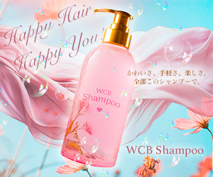
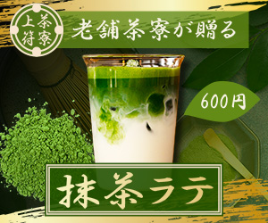
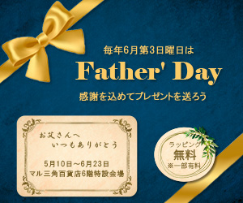
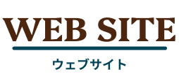
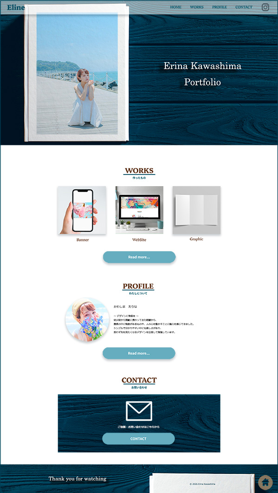
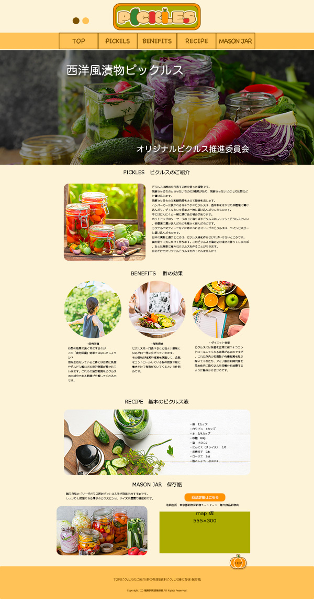

バナーデザイン練習10本ノックより WCB Shampoo
【概要】人気メーカーから新たに発売されたシャンプー。思わず手に取りたくなるかわいいデザインがポイント。
【記載事項】Happy Hair, Happy You! かわいさ、手軽さ、楽しさ。全部このシャンプーで。
【Point】可愛らしさと爽やかさのある背景画像を組み合わせ、ボトルの可愛らしさを際立たせる躍動感のあるデザインにしました。

バナーデザイン練習10本ノックより 茶寮上符
【概要】昔ながらの和菓子が人気の老舗から、若者層の呼び込みのために新たに開発されたアイス抹茶ラテ。本格的な抹茶を気軽に楽しんでもらいたい。
【記載事項】老舗茶寮が贈る 抹茶ラテ 600 円
【Point】ゴールドや落ち着いたグリーンを使用し、老舗のこだわりのある抹茶の高級感を表現しました。

架空バナー作成 父の日フェア
【概要】父の日の贈り物、購入する娘さんや主婦がターゲット
【記載事項】毎年6月第3日曜日は父の日 感謝を込めてプレゼントを送ろう 5/10〜6/23 マル三角百貨店6階特設会場 ラッピング無料(※一部有料)
【Point】落ち着いた色味で一目で父の日のプレゼントだと分かり、メッセージカードを載せることで実際にプレゼントを渡すことを想像できようなデザインにしました。


架空サイトのデザインカンプ Coffee Shop「Cozy chat」
Photoshopで作成したデザインカンプ
【Concept】
くつろいだ時間を あなたとわたしで
やさしい時間を過ごせる空間「Cozy chat」
落ちついた感じのあたたかなイメージ、
20代後半～40代女性を意識した雰囲気で。
記載内容は全て指示通り。バナーもオリジナルで作成。
【Point】
キャッチコピーの「くつろいだ時間」や「やさしい時間」をWebサイトからも感じられるように意識して作成しました。
コンセプトやイメージを大切にし、ナチュラルで落ち着いた色味で、全体の背景画像はコーヒー豆の袋を表現。
全てフリー素材の画像を使用していますが、明るさやトーンがバラバラだったため、統一感が出るように色味やトーンを加工しています。
使用ツール：Photoshop
制作期間：デザイン 4日


Portfolioサイト
就職活動のための自分のPortfolioサイトを作成しました。
【Concept】
転職活動での書類通過や採用担当者の方に自身の作品やスキルを見てもらい、「会いたい」「一緒に働きたい」と思っていただけるようなPortfolioサイト。
【Point】
採用担当者の視点を意識して写真やモックアップを使用し、分かりやすく見やすいシンプルさの中に、自分らしさも表現できるように意識しました。
IndigoやLight BlueをベースにTopページや枠組みは落ち着いた配色に。
ボタンのホバー時はアクセントカラーのYellowを使用。
Profileページは、様々な仕事や表現活動をしてきた自分の個性も表現できるようにカラフルな写真を使用し芸歴も掲載しました。
使用ツール：Figma、Photoshop、Dreamweaver
制作期間：デザイン 2日 / コーディング 1週間
こちらは仮画像です。サイト完成後に差し替えます。

架空Webサイト Select Shop ○○
前職で勤めていた服飾雑貨やアパレルを扱うセレクトショップの内容を使わせていただき、架空Webサイトを作成中です。(オーナー様から使用、掲載許可済み。写真は実店舗と異なるものも使用しています。)
【Concept】
『○○』遊び心を持って自由気ままに楽しくいこう！
人はそれぞれ価値観が違い何が良くて何が嫌いなのかは千差万別。
◯◯は自分達が良いと思ったモノを集めるお店。
【Point】
オーナー様のこだわりやコンセプトを大切にし、オシャレな中にどこか一癖ある個性的で可愛い商品を引き立たせるようにシンプルな色味で、店内カラーやナチュラルなテイストをサイトにも使用。
来店数を増やしたいとのご要望で、店舗情報を見やすく配置。
WebStoreへの誘導も考慮し、目立つボタンにしました。
元のサイトがページ数が多く、情報が分かりにくいところがあったので、1ページで全ての情報が分かるようにLPページに変更しました。
使用ツール：Figma、Photoshop、Dreamweaver
制作期間：
View Site


パンフレット ○○ HEALTHY LIFESTYLE
友人が経営しているヨガスタジオ、リラクゼーションサロン、カフェを併設した健康美容複合施設のパンフレットをお試しで作成中です。(掲載許可済み)
【Concept】
○○とはLinkとNaturalを組み合わせた造語。
ヨガで体を動かして心身を整え、
サロンで疲れた体をほぐして心身を癒し、カフェで内側からもキレイに。
【Point】
コンセプトや店内カラーに合わせたナチュラルでヘルシーな色味。
シンプルでスタイリッシュな見やすいデザインを大切にしながら、人の繋がりや暖かさを感じるパンフレットにしました。
SNS Promotion
Brand Collaboration
Handmade